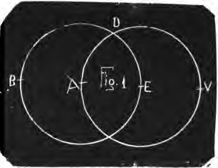

Libro I: Definizioni e Principi (§§ 1–10)¶
Lorenzo Mascheroni (La Geometria del Compasso, Pavia 1797, pp. 11–13)
Chiamo Geometria del Compasso quella, che per via del solo compasso senza la riga determina la posizione dei punti.
Dati per esempio due punti \(A\) ed \(E\) (fig. 1); se si cerchi il terzo \(D\), che sia tanto lontano da ciascuno di essi, quanto essi lo sono tra loro; si descrivano coll’intervallo, ossia raggio \(AE\), e coi centri \(A\), ed \(E\) i due cerchj \(EDB\), \(ADV\), che si tagliano nel punto \(D\); questo punto sarà il cercato; poichè sarà lontano dai punti \(A\), ed \(E\) d’un intervallo eguale ad \(AE\) (Prop. 1, lib. I Eucl.). Questo punto \(D\) si è trovato col solo compasso senza la riga.


Può accadere che la posizione di un punto si trovi col solo compasso; ma per dimostrare la proposizione ci sia bisogno di costruire la figura col mezzo della riga.
Se per esempio, dati due punti \(A\) e \(B\), che sieno lontani tra loro d’un certo intervallo, che si prende per l’unità, ossia si fa \(= 1\); si cerchi un punto \(D\), che sia lontano da \(B\) dell’intervallo \(BD = \sqrt{3}\); la soluzione del Problema sarà come segue.
Col centro \(A\), (fig. 2) raggio \(AB\) si descriva il cerchio \(BCD\). Collo stesso raggio, centro \(B\) si descriva un arco, che tagli la circonferenza in \(C\). Di nuovo collo stesso raggio, centro \(C\) si descriva un arco, che tagli la circonferenza più oltre in \(D\). Sarà questo il punto cercato, e trovato senza la riga.
Per dimostrare nondimeno, che sia l’intervallo \(BD = \sqrt{3}\), vi sarà d’uopo di linee rette, le quali si segnano colla riga. Sia \(BE\) il diametro del cerchio \(BCD\), e si guidino le rette \(BD, DE\). Sarà il triangolo \(BDE\) rettangolo in \(D\) (31, lib. III). Sarà dunque il quadrato della \(BE\) eguale alla somma de’ due quadrati delle rette \(BD\) e \(DE\) (47, lib. I); e però il quadrato della \(BD\) sarà eguale alla differenza de’ quadrati della \(BE\) e della \(DE\). Ma essendo l’intervallo \(BC = CD = AB\); sarà ancora \(DE = AB\) (15, lib. IV), ossia \(DE = 1\). È ancora \(BE = 2\). Sarà dunque \((BD)^2\), cioè il quadrato della \(BD\), eguale a \(4 - 1 = 3\); e però la sua radice \(BD = \sqrt{3}\). Il che era da dimostrarsi, e non si è potuto fare senza la riga. Questa proposizione è la 12 del lib. XIII d’Euclide.
Dalla definizione di questa Geometria del Compasso (§ 1) è chiaro, che appartengono ad essa tutti i Problemi, che si possono sciogliere col compasso solo, benchè per esso solo non si possano dimostrare; com’è il Problema precedente (§ 2).
L’uso di questa Geometria sarà grandissimo, come apparirà dagli esempj, nel trovare i punti in pratica colla maggior precisione possibile, e spesso molto più speditamente col solo compasso, che chiamando in soccorso anche la riga.
Sarà dunque nostro ufizio sciogliere i Problemi col solo compasso; sarà poi lecito servirsi di dimostrazioni costruite secondo l’uso col compasso e colla riga, al qual fine citeremo le proposizioni e i libri d’Euclide.
Così poi verremo a capo di questo trattato, che non abbia a mancare alcun elemento, perchè col solo compasso si possano determinare tutti que’ punti di qualsivoglia Problema, che fino adesso col cerchio e colla riga solevansi determinare.
Non pertanto noi non porremo qui tutti questi Problemi; ma dimostrati gli elementi necessarj e bastanti per tutti, tra essi sceglieremo un buon numero de’ principali, cioè tutti quelli, che ci sembreranno i più utili, o per una certa eleganza pregevoli.
Aggiungeremo qui in favore degli artisti, in grazia de’ quali in gran parte quest’opera è stata scritta, che sapendo essi la molestia e il pericolo d’errare, che nasce dall’allargare e stringere il compasso a varie aperture precise; noi procureremo di sciogliere i Problemi col minimo numero possibile di aperture di compasso. Sarà poi anche meglio per l’artista avere in pronto tanti compassi fedeli, come li chiamano, ossia tali, che uno si possa assicurare, che conservino appunto l’apertura data; quante sono le aperture, che richiede la soluzione del Problema.
Essendo oltre ciò importante alla precisione pratica della posizione di un punto, che la sezione delle linee, che lo determinano, si faccia ad angoli retti o vicini al retto; faremo sempre in modo, che un arco tagli l’altro o ad angoli retti, se ciò ne riuscirà, o almeno ad angoli non molto lontani dal retto.
Per essere più brevi, senza però riuscire oscuri, nello indicare le costruzioni delle figure adopreremo spesso alcuni compendj, che saranno tosto intesi al solo guardar la figura. Per esempio nella fig. 2 in luogo di dire: col raggio AB, e col centro B si descriva un arco, che tagli la circonferenza BCD nel punto C. Poi collo stesso raggio, e col centro C si descriva un arco, che tagli la stessa circonferenza in D ecc.; diremo solamente: si faccia ad AB = BC = CD, ecc.